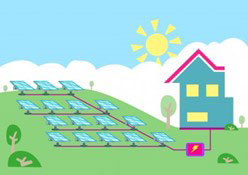
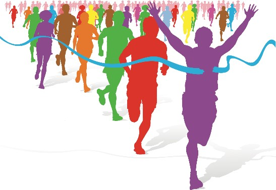

30v4rvm83n: 22/5-2019
Assignment 3
The sentences below, which are from two different texts, have been jumbled.
Connect the sentences so that they form two coherent texts.
| a) |
but it did not acquire its current home, designed |
| b) |
The Gallery was founded in 1824, |
| c) |
tall, bearded, and soft-spoken husband goodbye. |
| d) |
ranch on the edge of a stand of pine trees with |
| e) |
The site in Trafalgar Square was chosen for |
| f) |
London and the poorer communities of the East End. |
| g) |
I have a picture in my mind of a tiny |
| h) |
chambray work shirt and she’s just kissed her |
| i) |
by William Wilkins, until 1838. |
| j) |
There’s a woman standing in the doorway in cutoffs and a blue |
| k) |
its central location, accessible to both the rich of West |
| l) |
some horses in the yard. |
|
5k1u5ki1fo: 3/12-2019
Assignment 3
The sentences below, which are from two different texts, have been jumbled.
Connect the sentences so that they form two coherent texts.
| a. |
so you should check at your local office to see if there |
| b. |
Some social security offices employ interpreters, |
| c. |
theme has inspired so many profound |
| d. |
The euphoria of being in love is universal |
| e. |
If a local interpreter is not available, the staff at your |
| f. |
and has been experienced by succeeding |
| g. |
poems and expressions of idealism. |
| h. |
local office can arrange an interpreter for you. |
| i. |
generations down the centuries. No other |
| j. |
is someone there who speaks your language. |
|
6qydjj8mhr: 28/5-2020
Assignment 3
The sentences below, which are from two different texts, have been jumbled.
Connect the sentences so that they form two texts.
| a. |
there was a fold-down platform for a bassinet. Harvey |
| b. |
London, stunning architectural features and |
| c. |
now a very popular choice for both corporate and private events. |
| d. |
had reasoned that a mid-week midday flight |
| e. |
Alexandra Palace has built a reputation |
| f. |
well proportioned halls, the Palace is |
| g. |
check-in he had gambled on a seat in a central section |
| h. |
to Los Angeles would not be full of families. |
| i. |
as one of London’s premier venues. |
| j. |
The plane had been empty when Harvey boarded. At |
| k. |
between the bulkheads. In front of his seat |
| l. |
With its beautiful setting with panoramic views of |
|
7cgdmdvb9o: 25/5-2022
Assignment 3
I nedenstående video fortæller skuespilleren Tom Hiddleston, hvordan unge skuespillere bør håndtere at få afslag på roller.
Se videoen, og skriv, hvilken ordklasse de nedenstående ord tilhører ud fra sammenhængen. Find ét synonym til hvert af de nedenstående ord ud fra den betydning, de har i sammenhængen. Synonymet må kun bestå af ét enkelt ord.
Tom Hiddleston's advice: Have faith in yourself
Solitary (0:06)
Repeatedly (0:19)
Declined (0:23)
Impolitely (0:25)
Often (0:28)
Puzzling (0:35)
Despondent (0:48)
Rejection (0:58)
Curiosity (1:08)
Change (1:27)
Faith (2:03)
8jry6tzd2q: 20/8-2019
Assignment 3
Lyt til episoden “Animal Instinct” fra podcasten Criminals hjemmeside.
Skriv otte ord, som tilhører det samme semantiske felt med overskriften Crime.
fb5q5a80oi: 18/8-2021
Assignment 3
Nedenfor er tre danske ord, som hver især er oversat til tre engelske ord/udtryk efterfulgt af et billede.
Vælg for hvert billede det af de engelske ord/udtryk, der passer bedst. Forklar kort, hvorfor det valgte ord/udtryk passer bedst til billedet. Skriv dit svar på dansk.
1. Udnytte: harness/leverage/trade upon

2. Kald: name/calling/summon
3. Uhyggelig: eerie/weird/grisly
fgaw43pcmo: 18/8-2020
Assignment 3
Lyt til podcasten Dear Prudence, The “In-Laws 2.0” Edition, som er fra et radioprogram om unges familieforhold.
Find og skriv mindst fire forskellige modsætningspar.
Dear Prudence, The “In-Laws 2.0” Edition, 2019
gznvs4qzz5: 2/12-2021
Assignment 3
The sentences below, which are from two different texts, have been jumbled.
Connect the sentences so that they form two coherent texts.
| a. |
what it is – could harbour life. |
| b. |
kilometres – an area roughly the size of Scotland. |
| c. |
The mobile lab now rolling across the crater plain at fifty miles |
| d. |
spaceship – and in an emergency it could even fly. |
| e. |
Agency spacecraft suggests a large body of liquid water, as well |
| f. |
it was a self-contained base in which twenty men could live and work for several weeks. |
| g. |
New radar data from a European Space |
| h. |
an hour looked rather like an outsized trailer mounted |
| i. |
as three smaller lakes, are spread out over 75,000 square |
| j. |
Indeed, it was virtually a land-going |
| k. |
There is potential that the liquid water – if that is |
| l. |
on eight flex-wheels. But it was very much more than this; |
|
ljl47pw9lu: 20/5-2020
Assignment 3
Lyt til klippet fra den amerikanske vicepræsident Mike Pences tale til The National Space Council.
Find og skriv fem forskellige substantiver (navneord) og tre forskellige verber (udsagnsord), som tilhører det semantiske felt military.
Mike Pence says, “time has come”
oq902at7jb: 31/5-2021
Assignment 3
Se videoen, og find syv positivt ladede adjektiver (tillægsord) og fire negativt ladede adjektiver, som de optræder i videoen.
Social Media Do’s and Don’ts!
r66nvkoh49: 17/8-2022
Assignment 3
Nedenfor er angivet fire danske ord, som hver især er oversat til tre engelske ord efterfulgt af et billede.
Vælg for hvert billede det af de engelske ord, der passer bedst. Forklar kort, hvorfor det valgte ord passer bedst til billedet. Skriv dit svar på dansk.
1. Deling: platoon/partition/fission
 2. Tegn: omen/constellation/character
2. Tegn: omen/constellation/character
 3. Slutte: infer/terminate/finish
3. Slutte: infer/terminate/finish

4. Samle: collect/gather/unite
vr5b6lm0x0: 27/5-2019
Assignment 3
Lyt til nyhedsindslaget om sleep robots.
Find og skriv mindst otte ord, som tilhører det semantiske felt sleep.
| Semantisk felt sleep |
Eksempel: nodding off,
|
Sweet dreams with a sleep robot
winlqr755w: 2/12-2020
Assignment 3
Lyt til videoklippet fra “Adam Driver’s Chill Monologue” fra Saturday Night Live.
Angiv ud fra sammenhængen, hvilken ordklasse følgende ord tilhører:
hosting [0:28]
hard [0:38]
chill [1:01]
less [1:16]
approach [3:10]
dated [4:04]
Adam Driver's Chill Monologue – SNL
xvyd7dnlxy: 25/5-2021
Assignment 3
Nedenstående video er fra BBC og rettet mod børn, som bekymrer sig om, hvad de læser og hører om i medierne.
Se videoen, og angiv, hvilken ordklasse de nedenstående ord har ud fra sammenhængen. Find ét synonym til hvert af de nedenstående ord ud fra den betydning, de har i sammenhængen. Synonymet må kun bestå af ét enkelt ord.
Bad (0:02)
Totally (0:03)
Upset (0:05)
Worrying (0:18)
Often (0:21)
Affected (0:26)
Adult (0:36)
Reassure (0:38)
Help (0:45)
Advice if you're upset by the news
zuea36dshk: 19/5-2022
Assignment 3
The sentences below, which are from two different texts, have been jumbled.
Connect the sentences so that they form two coherent texts.
| a. |
atmosphere of mutual respect. Then they show off their martial skills. |
| b. |
The essence of the relationship between fancy foreigners and doughty |
| c. |
but also a troubled one. Outside the stadium there were protests in the streets and cries of |
| d. |
Lionheart meets the Muslim hero Saladin. The great men exchange pleasantries in an |
| e. |
where the line between contagion and control is already stretched thin. |
| f. |
The key moment comes when the English king Richard the |
| g. |
Tokyo has been a warm, courteous and resourceful host, |
| h. |
Englishmen was captured by Sir Walter Scott in his novel The Talisman, |
| i. |
“No Olympics” as the delegates, wonks and team members left the show at the end. |
| j. |
many people have felt at the staging of this global event in a city |
| k. |
The display of disaffection was orderly but assertive, marking the anger |
| l. |
written in 1825 and set during the Third Crusade. |
|